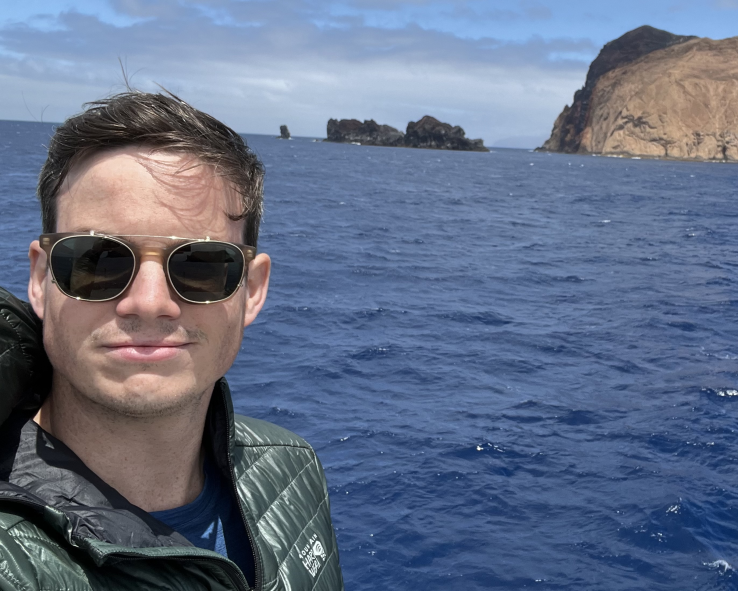

PhD Candidate, Scripps Institution of Oceanography
Geology | Volcanology | Petrology | Geochemistry
Hi, I'm James. Currently, I'm an Earth Science PhD candidate at Scripps Instition of Oceanography at UC San Diego, working under the direction of Dr. Emily J. Chin.
My research interests are rooted in answering a few basic questions about volcanoes that are, ultimately, motivated by reducing volcanic risk:
- What melts to form magmas, and what causes this melting?
- Why do volcanoes form where they do?
- How do volcanoes behave when erupting, and why do they behave that way?
To tackle these problems, I use a combination of fieldwork (both terrestrial and sea-going*), laboratory analyses, and thermodynamic modeling methods. Lab work examples include scanning electron microscopy and X-ray spectroscopy (SEM-EDS), X-ray fluorescence (XRF), and mass spectrometry (solution nebulized- and laser ablation ICP-MS).
*That's me, poking out from an immersion suit aboard R/V Thomas G. Thompson! Photo from expedition TN-438 with ROVs Jason II and Medea to the Mariana Trench.
Education
- PhD Candidate, Scripps Institution of Oceanography, UC San Diego
- A.M. (2019) Harvard University
- M.A. (2016) Queens College, City University of New York
- B.A. (2013) Pomona College
- Field camp (2012) Frontier Abroad, University of Canterbury, NZL
Publications
My peer-reviewed scientific journal articles are listed here. For other things like abstracts, see either my CV or my Google Scholar page.
- Muller, J.K., Chin, E.J. (in review) Young, enigmatic lavas from a fossil slab remnant beneath Baja California, Mexico. Geology.
- Durkin, K., Castillo, P.R., Straub, S.M., Mallick, S., Saal, A. and Muller, J.K. (in press) Widespread contamination of the Pacific upper mantle during the mid-Cretaceous. Marine Geology, p.107460, https://doi.org/10.1016/j.margeo.2024.107460.
- Muller, J.K., Longpré, M.-A. (2024) Tephra dispersal and composition reveal the explosive onset of a large basaltic fissure eruption: Timanfaya, Lanzarote, 1730–1736 CE. Bulletin of Volcanology, v. 86, n. 38, https://doi.org/10.1007/s00445-024-01729-5.
Contact
You can find me in person or online at the following addresses:
-
PHYSICAL ADDRESS
James K. Muller
Sverdrup Hall 3139
Scripps Institution of Oceanography
UC San Diego
La Jolla, CA 92093-0212 USA
-
MAILING ADDRESS
James K. Muller
7835 Trade St., Suite 100
ATTN: Sverdrup Hall 3139
San Diego, CA 92121 USA
-
EMAIL/WEB
- jkmuller@ucsd.edu
- jkmgeo.github.io